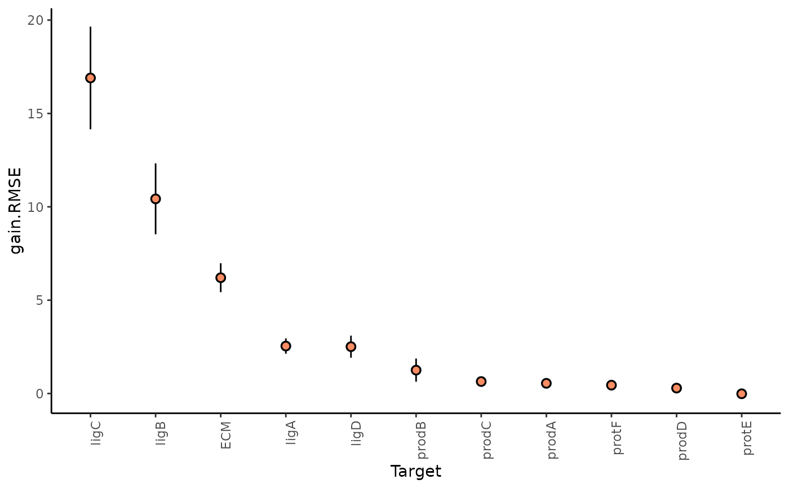

Generates a plot of the mean (+- standard deviation) of the performance value per target across all samples from the results.
plot_improvement_stats(
misty.results,
measure = c("gain.R2", "multi.R2", "intra.R2", "gain.RMSE", "multi.RMSE",
"intra.RMSE"),
trim = -Inf
)a results list generated by
collect_results().
performance measure to be plotted (See
collect_results()).
display targets with performance value above (if R2 or gain) or below (otherwise) this value only.
The misty.results list (invisibly).
collect_results() to generate a
results list from raw results.
Other plotting functions:
plot_contrast_heatmap(),
plot_contrast_results(),
plot_interaction_communities(),
plot_interaction_heatmap(),
plot_view_contributions()
all.samples <- list.dirs("results", recursive = FALSE)
collect_results(all.samples) %>% plot_improvement_stats()
#>
#> Collecting improvements
#>
#> Collecting contributions
#>
#> Collecting importances
#>
#> Aggregating
misty.results <- collect_results(all.samples)
#>
#> Collecting improvements
#>
#> Collecting contributions
#>
#> Collecting importances
#>
#> Aggregating
misty.results %>% plot_improvement_stats(measure = "gain.RMSE")

misty.results %>% plot_improvement_stats(measure = "intra.R2")